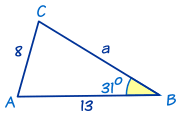
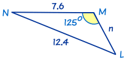
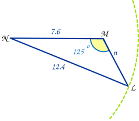

Solving SSA Triangles
"SSA" means "Side, Side, Angle"
 |
"SSA" is when we know two sides and an angle that's not the angle between the sides. |
To solve an SSA triangle
- use The Law of Sines first to calculate one of the other two angles
- then use the three angles add to 180° to find the other angle
- finally use The Law of Sines again to find the unknown side
Example 1

In this triangle we know
- angle B = 31°
- b = 8
- and c = 13
In this case, we can use The Law of Sines first to find angle C:
Next, we can use the three angles add to 180° to find angle A:
Now we can use The Law of Sines again to find a:
Notice that we didn't use A = 92.2°, that angle is rounded to 1 decimal place. It is much better to use the unrounded number 92.181...° which should still be on our calculator from the last calculation.
So, we have completely solved the triangle ...
... or have we?
* Back when we calculated:
C = sin−1(0.8369...)
C = 56.818...°
We didn't include that sin−1(0.8369...) might have two answers (see Law of Sines):
The other answer for C is 180° − 56.818...°
Here you can see why we have two possible answers:

By swinging side "8" left and right we can
join up with side "a" in two possible locations.
This is called the Ambiguous Case.
So let's go back and continue our example:
The other possible angle is:
With a new value for C we'll have new values for angle A and side a
Use "the three angles add to 180°" to find angle A:
Now we can use The Law of Sines again to find a:
So the two sets of answers are:
C = 56.8°, A = 92.2°, a = 15.52
C = 123.2°, A = 25.8°, a = 6.76
Example 2

This is also an SSA triangle.
In this triangle we know angle M = 125°, m = 12.4 and l = 7.6
We'll use The Law of Sines to find angle L first:
Next, we'll use "the three angles add to 180°" to find angle N:
Now we'll use The Law of Sines again to find n:

Note there's only one answer in this case. The "12.4" line only joins up one place.
The other possible answer for L is 149.9°. But that's impossible because we already have M = 125° and a triangle can't have two angles greater than 90°.
Example 3: What the ... ?
- angle A = 35°
- side a = 4
- side c = 9
Wait! The sine of an angle can never be greater than 1. This means no such triangle exists.
Conclusion:
When solving a "Side, Side, Angle" triangle we start with the Law of Sines, but need to check if there's zero, one or two possible answers!